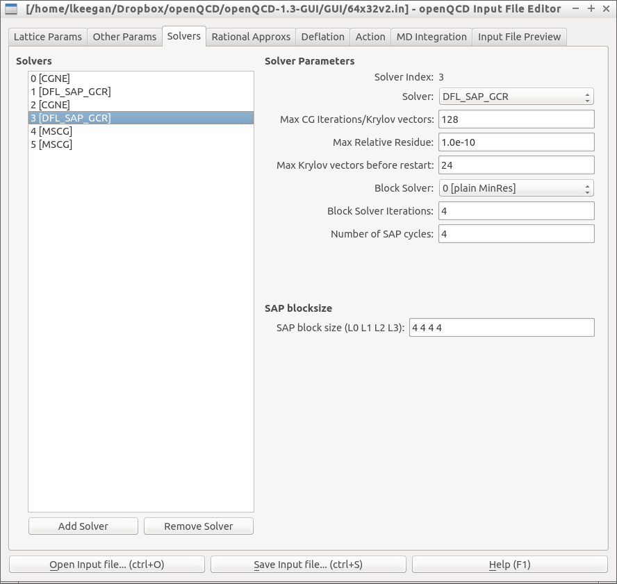

An input file editor with a graphical user interface for the openQCD lattice QCD simulation program. Allows editing of existing files or creation of new ones.
Includes multiple choice options for parameters whenever possible, and performs basic consistency checks on parameters that are entered as text, to reduce the possibility of typos in the input file.
Requires Python 2.7 and PyQt4.
Still in beta - comments / bug reports very welcome!
Thanks to Isabel Campos and Martin Lüscher for their help and comments.
